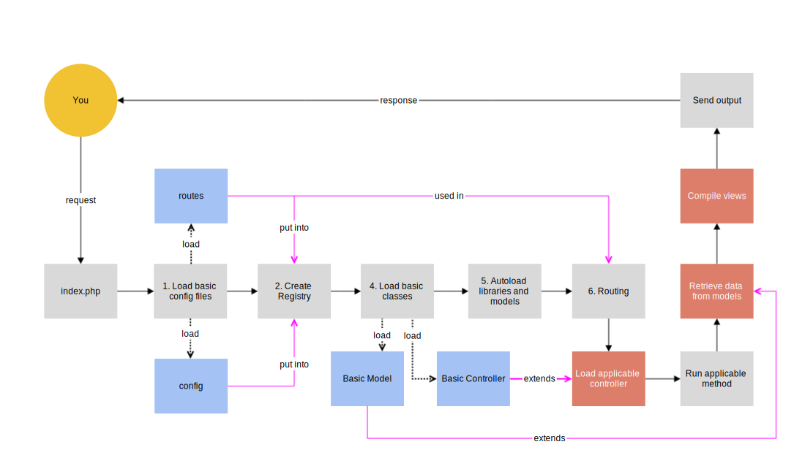

Overview
Lighter is a simple MVC framework for rapid web application development in PHP.
It contains a set of useful libraries ready for use out of the box, and is constructed in an easy to understand way.
It is created in a Front Controller pattern, which is described as a design pattern that "provides a centralized entry point for handling requests."
Every request is funnelled into the index.php file, which then handles the entire execution of the application based on which url was requested.
The website is split up into three folders, the public folder (which can be renamed to anything, such as public_html or www), the app folder, and the sys folder.
The public folder contains index.php and the .htaccess file, and also any assets that your website may need.
The sys folder contains all files necessary for lighter to operate that you, the developer, don't need to touch. Feel free to look through them to understand how lighter works.
The app folder contains libraries, files that the developer must edit, or folders where the user needs to create new files (such as controllers and methods).
Below is a flowchart depicting a simplified version of how lighter works.
